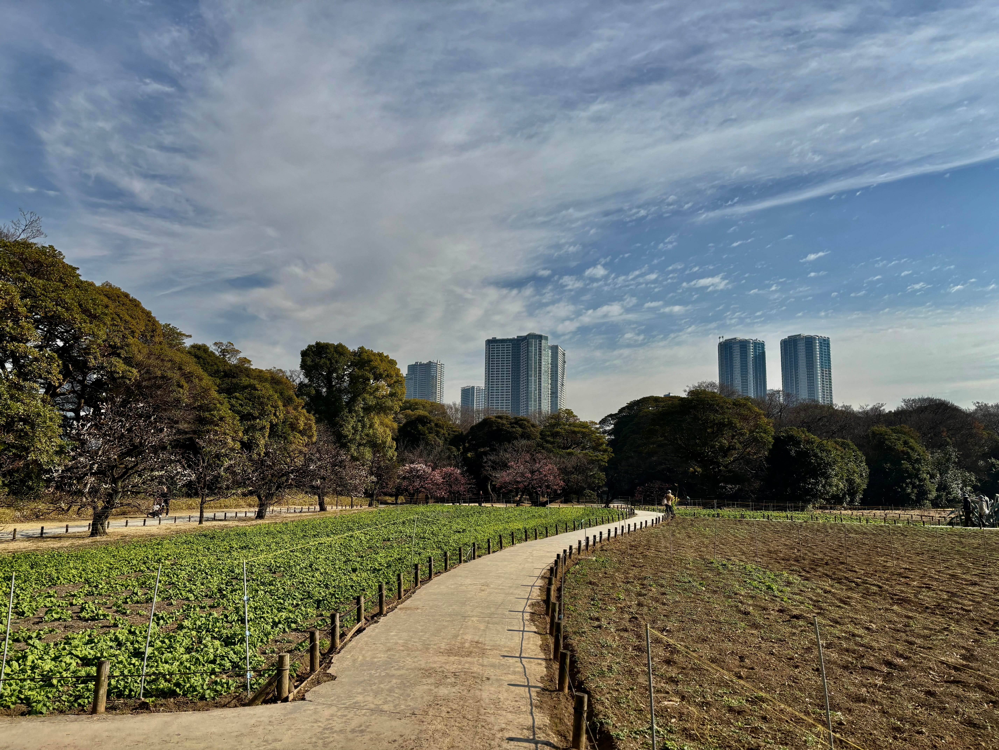

April 3, 2026
Japan Trip (Victoria to Tokyo)
A while back my friend Emrys asked me if I wanted to come to Japan with him. At the time, my main plan for my gap year was to go Europe and visit some family and friends later in 2026, and the idea of also going to Japan sounded a bit ridiculous. I was trying to save money for University after all. But part of me knew that going on this trip to Japan with one of my high school best friends was really important and that I really had to go. I knew it would turn out to be an unforgettable and amazing experience if we could make it happen.
So we managed to book everything over Christmas time and had everything lined up and flights booked to meet in Tokyo on February 2nd. January flew by and soon enough it was February and it was time for me to go. On my way out of Canada I stopped in at my friend Andrew’s dorm at UBC to spend a few nights hanging out with him on campus before heading off. We had a jolly old time playing cards, eating at the cafeteria and going for rainy walks out on the nudist beach. After a few nights of uncomfortable sleep under his bed, where I woke up many times in the night to the bright flashes of his roommate's late night gaming quests, it was time for me to head to YVR for my direct flight to Tokyo NRT.
I said goodbye to Andrew early in the morning and caught the bumpy bus ride out to the Canada Line train towards the airport. I remember that nervous excitement, unsure if I had left something critical back home. I think I made it to the airport about 4 hours early, expecting a long line of security, but ended up getting through in just a few minutes. The Vancouver airport is really quite a pretty airport, there are Totem poles, sculptures and fake (maybe real) plants galore, alongside many Tim Hortons of course.
A few hours of reading and lots of Jack Johnson later, my plane was finally boarding. I snuck into my cramped seat at the back of the plane and had a lovely conversation with an older woman who was going to Japan for her third time and had many tips for my travels, for which I was very grateful, but I don’t think I actually did anything she told me about.
Airplanes are a truly amazing invention. I’m amazed that we have flying buses that can carry 300 humans all the way across oceans and around the world in basically no time at all. It’s an incredible feeling to be above the clouds and looking down at the world shrinking below you. It’s also incredible that the majority of those 300 people close their window as soon as they get on the plane and see nothing of the great world below them, just empty, endless episodes of entertainment. But I guess it is my fault for not buying the window seat and I guess it’s not fair to get mad about something I can’t control. But come on! It’s beautiful!
Anyways I made it to Tokyo NRT and managed to get my way through customs and onto the other side of the airport without any problems. Down on the basement floor I waited in line to get a ticket for the Skyliner into the city. In the line I saw some young guys behind me and one of them just so happened to be wearing a BoulderHouse shirt! They were from Victoria of course and we had a lovely little chat before I parted ways with them forever (unless I see them at the climbing gym, that is). The ticket lady was the first person I talked to in Japan and she was really so friendly and nice, it got me really excited to meet more people. It’s not easy to connect with everyone though.
The train ride into Tokyo was really amazing. There were huge rows of apartment buildings shooting up outside my window as we rocketed by on the rails. There were confusing ads playing on the screens in an alphabet I had really no knowledge of. I had been to Europe before where even if you can’t understand what’s written in the ad, you can still get an idea of how to read it since it’s in the same language. This is all pretty obvious but it is something so different that it’s hard not to be surprised. The guy next to me on the train was wearing a mask, playing Pokémon on his phone and had a worn out look in his eyes. I remember wishing that I had perfect Japanese and that I could just reach out to him and say what’s up. I wished that nonstop throughout the whole trip.
When I arrived in Shinjuku I was kinda confused. There were all the Tokyo night lights that I had seen in the photos so many times, but it all seemed kinda fake for some reason, now that I was there in person. There were so many people and I just generally felt overwhelmed. But I figured it would be best if I made it to the hostel and put my things down after the long journey. It would be a few hours before Emrys and Carter would arrive from their flight from China (they did a month there together before meeting up with me in Tokyo).
The capsule hostel/hotel we were staying in was quite a weird vibe to say the least. I mean, everyone has an individual pod that they sleep in, fully equipped with a reading light and a charger. It felt like the rows of pods where the Clones sleep in on Kamino. The pods seemed to inspire a bit of an antisocial atmosphere in the place, even in the common areas. Whereas other places we stayed in with rooms of bunk beds were much more social, at this place people kept to themselves a little more. That might be preferred for some people, which is fair. It didn’t stop us from meeting lots of cool people, but it definitely dampened the mood a little bit for sure.
Anyways, after I checked in there I layed in my clone trooper capsule for a while before I felt like I was wasting my time. “I should be exploring this new city! Not laying in this stupid pod.” I was tired but I couldn’t let myself just lay there when it was my first time in Asia God dammit! So I got up and walked out into the stimulating streets of Shinjuku. I first walked along the main street that we were staying on and was amazed at how many people were out walking at midnight. Back home you might see a few people walking down Government street or Wharf, but not nearly the numbers that I was observing on that night. I took a side street and was astonished to find that if you just walk a block away from the main street, you enter a whole different world. Quiet, dark, and empty. Just streets with a bunch of scooters and little tiny trucks lined up on the sides and in little parking lots.
I walked into a Pachinko parlor. Wow, what a place. I mean a Pachinko machine (which from my understanding is basically a slot machine) is designed to be as stimulating as possible, but I saw so many people who as they played their respective pachinko game, were also scrolling on Reels! How wild is that? I mean kinda a strange feeling, a little sad if you ask me. But hey! If they’re having a good time then so what!
I started getting a little cold and started feeling my travel legs a little more and decided it was best if I just went back and laid down for a bit. I was just drifting off to sleep in my pod when I got a call from Emrys on WeChat and jumped out to see him and Carter out in the locker room with their great heaving backpacks and hiking boots. Man, it was so great to see them! Walking those busy streets was interesting, but I had already started to feel lonely in those few hours I was alone in Japan. It was great to have some friends with me.

A cute bookstore in the Jimbocho book town neighbourhood.
We headed up to the café on the upper floor of the hostel where we shared some of the high quality tea that Carter had bought in China. They told me amazing stories of people they met and the strange things they saw in China. It got me so excited to start having my own adventures and meeting people myself! That night we walked around for many hours in the neon streets. As we walked and laughed and talked I started to like the city more and more. Before, when I was by myself, it had all seemed a little superficial, but all of sudden with two friends by my side it was the most fun and vibrant city ever. We saw wild billboards, crazy outfits and fantastic stores. We saw a skater and cheered him on as he went for his grind. He gave us a friendly peace sign and yelled a “thank you” to us with a strong japanese accent.
When I woke up in the morning I went up to the cafe to get a drink and write in my journal a bit before the others woke up. When I looked out of the window I was greeted by a completely different city than I had seen the night before. It had turned pure white! With the sun beating down on all the white and grey buildings, it was hard to look at with my sleepy eyes. Soon, Emrys woke up and we went out for a walk together, exploring that new city that I hadn’t seen last night. The sun was warm but the wind was cold. Now, there were people out in the parks and business people strutting towards jobs. Eventually, Carter awoke from his slumber and we headed off all together in search of the Metropolitan Government building where there was supposedly a free viewing area on the 45th floor.